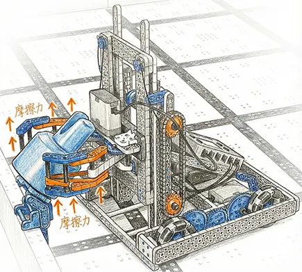
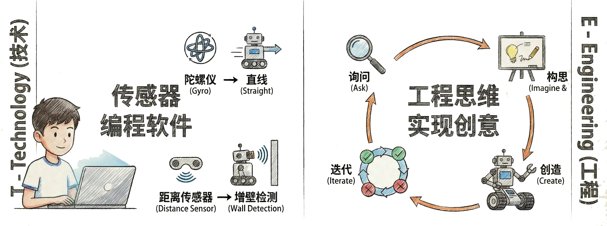
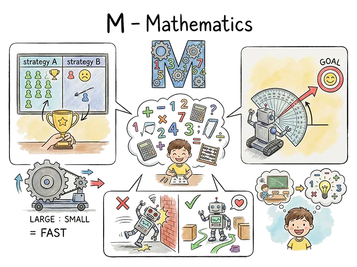
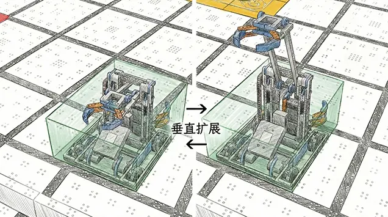
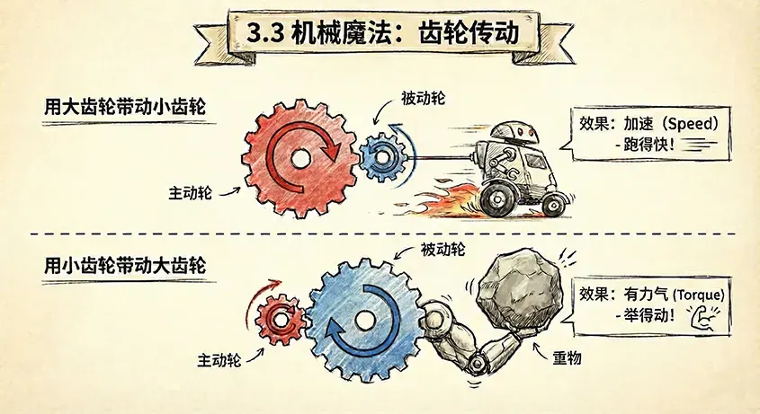
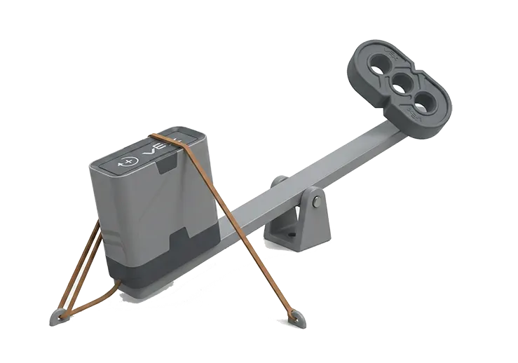
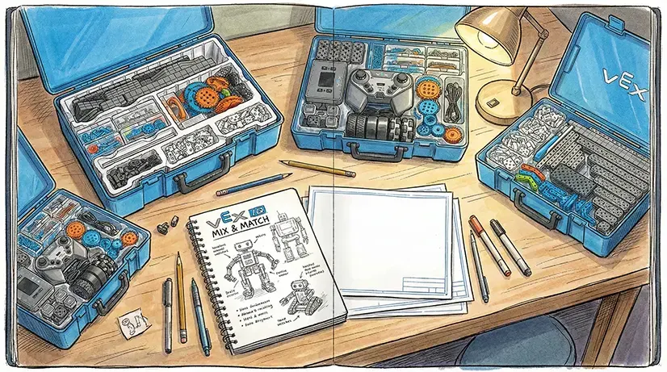

What we're learning: Physics, Math, Engineering, Programming
Our Goal: To build a smarter robot!
STEM is the super-combo of Science, Technology, Engineering, and Mathematics!
Definition: Like friction, center of gravity, and leverage from physics class.
Our Application:
For example, when Hengjia was designing the claw to grab slippery Pins, he thought of friction. He wrapped rubber bands around the claw, and the Pins didn't fall off anymore!

Hengjia: "Wow, rubber bands are so powerful! That's the power of science!"
Definition: High-tech gear like sensors and programming software.
Our Application: We use a Gyro to help the robot drive in a straight line, and a Distance Sensor to tell it when a wall is ahead.

Definition: Thinking like an engineer to turn ideas into reality.
Our Application: We followed the Engineering Design Process:
Definition: Arithmetic! Addition, subtraction, multiplication, and division!
Our Application:
Math is everywhere!
1. Scoring: We calculate which strategy gives the highest score (we did this in Chapter 2).
2. Gear Ratios: We calculate how fast the robot goes with different gear combinations.
3. Angles: In autonomous, we calculate how many degrees to turn to aim at the Goal perfectly.

Learning STEM feels like learning a secret superpower! But theory isn't enough. Real engineers solve problems within "boundaries" or constraints. Let's see what boundaries this year's game has set for us!
Teacher Wang says real engineers always work under Constraints. For us, the rules are our constraints.
Constraint: The robot must fit in a 11" x 20" x 15" box at the start.
Our Challenge: According to the manual, the High Tower is 9.5" tall. With a Pin on top, it's super tall! If we build a fixed long neck, it won't fit in the box.
Hengjia's Solution: Rule <SG3> says robots can expand vertically without limit! We can build a multi-stage lift like a forklift. It stays small to fit in the box and "grows" tall during the match.

Constraint: We can only use 6 Smart Motors.
Our Math:
- Drivetrain: Needs at least 2 (left and right) to move.
- Lift: Beams are heavy, so maybe 1 or 2 motors to lift them.
- Grabber: Needs 1 to open and close the claw.
- Wrist: Needs 1 more if we want to tilt the claw.
Shuyue: "Oh no, we're running out of motors! I wanted to build a fancy 4-wheel drive car, but I guess that's not happening."
Decision: We have to be careful. We'll stick to 2 motors for the drivetrain.
These "boundaries" might limit us, but they also spark our creativity! To do our best within these rules, we need our "secret weapon"—Mechanical Principles! Let's see how gears and levers can create big energy!
Gears are the heart of robot power. They can magically adjust power, letting you decide if your robot is a "sprinter" or a "weightlifter."
Effect: Speed - It goes fast!
Analogy: Like riding a bike downhill; pedal once, and the wheels spin many times!
Plan: Let's try a 2:1 speed ratio on our first-gen chassis to make it fly!
Effect: Torque - It's strong!
Analogy: Like riding a bike uphill; you pedal many times for the wheel to turn once. It's slow, but it has the strength to climb!
Plan: The lift arm needs to carry Beams, so we'll use reduction gears to give it strength.

We need a long arm to reach the High Tower, but the longer the arm, the harder the motor has to work.
Handi's Discovery: I tried holding a long stick. If I hang a weight at the far end, my wrist almost snaps! That's Torque! (Torque = Force × Distance). But when I put a pivot point close to the weight, I can lift it easily!
Hengjia thought of a clever trick: Rubber Bands!
We attach rubber bands to the back of the arm to help the motor pull. This is called "Gravity Compensation." Just like a seesaw, if someone helps push one side, the other side goes up much easier!

With mechanical magic, our robot has a strong "body." But a body needs a smart "brain" to command it! Let's dive into the world of programming to see how we bring the robot to life!
Hengrui gave us a programming lesson. He said robots are actually quite silly, and we have to tell them exactly what to do at every step.
The Silly Way: "Drive forward for 2 seconds." If the battery is low or the wheels slip, it won't get where it needs to go.
The Smart Way: "Drive forward until your eyes (sensors) see the wall is only 10 cm away." That's closed loop!
This sounds fancy! Hengrui says it's like when we walk crooked and automatically fix it. PID is the magic tool for making the robot drive in a straight line.
P: (Proportional) Looking at the present. The further off-course, the harder the correction.
I: (Integral) Looking at the past. It has a good memory. For example, if the car drifts right (maybe due to friction), it remembers this "accumulated error" and gives a steady push to the left to cancel it out. It fixes those stubborn little habits.
D: (Derivative) Looking at the future. The "little driver" is predictive and eases up early to return to the path smoothly without wobbling. It prevents overshooting and makes movements smooth.
We've learned so much theory in this chapter! Even though we haven't touched the pieces yet, we already feel like real engineers!
Next Step: Grab pen and paper, and start sketching! We'll draw our ideas and pick the best one to start building our first-generation robot!
